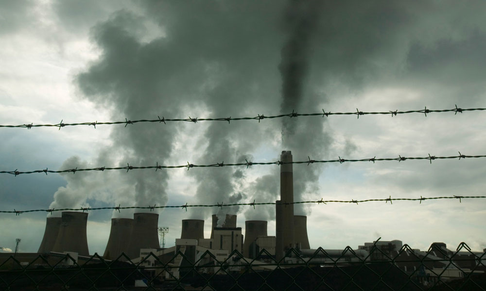

GLOBAL WARMING
Welcome to the blog of Dolapo Arogun
WHAT IS A CARBON FOOTPRINT?
Title description, December 4, 2022
A Carbon Footprint is the total greenhouse gas emissions caused by something. Greenhouse gasses are what is making our planet warmer and causing climate change. Your carbon footprint is a number which shows the amount of carbon dioxide your greenhouse gas emissions equal.
Places, companies, and events can have carbon footprints too. So, the school can have a carbon footprint made up from how much electricity it uses, the school dinners we eat and the items we use like paper and pens.
Anything that creates greenhouse gases can be included in your total carbon footprint. For example, a pen that was created in a factory that burns fossil fuels has a carbon footprint even if we can’t see the fossil fuels that were used when we look at a pen. It’s the same with food – a ham sandwich might not seem like it would have a carbon footprint but even things like transporting the ham from the farm to the shop will use fossil fuels.

WHAT INCREASES OUR CARBON FOOTPRINT?
Title description, December 4, 2022
Carbon footprints can be increased by how we consume things such as food, transport usage, electricity, and gas. Some of the foods that produce the largest amount of carbon dioxide are beef, cheese, poultry and pork. Ways to reduce your carbon footprint It can be important for children to understand that the decisions they make can have an effect on their environment. This may inspire them to do more to protect their environment and also develop a feeling of responsibility that will cross into other areas of their lives. There are also lots of things children can do individually to reduce their carbon footprint, thereby empowering them to protect their environment.
WHAT ARE THE WAYS TO REDUCE OUR CARBON FOOTPRINT?
Title description, December 4, 2022
Since there are myriads of ways to increase the carbon footprint, it follows that there must be various ways to reduce the carbon footprints as well. here are some of those ways:
- use reusable water bottles
- turn off lights not being used: Make sure you turn off the lights in the classroom before you go to lunch, don’t leave the oven on for an hour before you put your pizza in and try and find ways to use less electricity. The good thing about electricity is one day it might all be made from wind power and tidal power which means that no carbon emissions are pumped out. At the moment 46% of electricity comes from eco-friendly energy – these are known as renewable resources.
- walk to school instead of being driven: Instead of driving a vehicle that uses fossil fuels and walk or cycle to school. That will keep you keep healthy and the environment will thank you.
- go camping instead of flying to an international destination
- make gifts instead of buying them: Everything we do creates emissions, then choosing to use a bag we already have instead of buying a new one, playing with a toy we have and repairing things that are broken instead of replacing them can have a really reduce our carbon footprint.
- use paper or reusable straws: Clothes create a lot of carbon emissions when they are made, plus some fabrics like polyester are made from plastic which means they release little pieces of plastic into the oceans when they are washed and pollute the sea.
- By buying a secondhand cloth instead of a new one you are stopping a brand-new item being made and not adding to your carbon footprint.
- Plant a tree: Trees breathe in CO2 and turn it into oxygen – plant a tree and you can help suck that carbon dioxide out of the atmosphere!
- Reduce how much meat you eat/ go veggie: Food’s carbon footprint is the greenhouse gas emissions produced by growing, rearing, farming, processing, transporting, storing, cooking and disposing of the food you eat. Meat, especially lamb and beef, has a high carbon footprint. It is estimated a vegetarian diet has half the carbon footprint of a meat eater’s diet and that vegans have the lowest carbon footprint of all diets. Think about eating less meat – maybe have a veggie school dinner option instead of meat or find ways to reduce the meat you put into something by adding an extra vegetable to your meal like a sweet potato. If vegetables are locally grown that’s even better because it will have less transportation emissions.
Dolapo Arogun
Hello Children. My name is Dolapo Arogun. And I will like to take you on a journey to a cleaner energy future for mankind. Have you heard people on TVs talking about climate change? Ever wondered what it is and why we care about it so much? Well, I am here to help you understand what it all means, what is being done to address it and what we can all do to make a difference.
Popular Posts
-
 What is Global Warming?
What is Global Warming?
Global warming is the term used to describe the rising of the average temperature on Earth. It has to do with the overall climate of the Earth rather than the weather on any given day. -

What causes Global Warming?
Greenhouse gases are the biggest factor contributing to global warming. It’s important to know that many of them occur naturally in the atmosphere. -
 What are the effects of Global Warming?
What are the effects of Global Warming?
Global warming is affecting life around the world and as a result, nature and wildlife are having to adapt to the new changes.

Tags
Travel New York London IKEA NORWAY DIY Ideas Baby Family News Clothing Shopping Sports Games